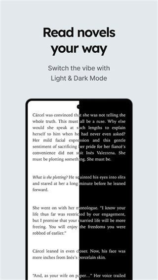

Tappytoon 从下载到追更的完整上手教程——5 步开始看韩漫
这篇教程带你从零把 Tappytoon 用起来：下载安装、快速注册、画质设置、追更流程和新人最容易踩的坑，照着走一遍就能顺畅开看。
这篇教程结束时，你能在自己的手机或电脑上顺畅地用 Tappytoon 追更韩漫，知道怎么注册、怎么调画质、怎么省流量，以及遇到常见问题时该去哪找答案。
准备工作
Tappytoon 支持 iOS、Android、Web 三端。移动端从 App Store 或 Google Play 安装，电脑端直接用浏览器打开就行。开始之前先确认两件事：
- 你有一个 Apple / Google / Facebook 账号（三选一即可，没有也可以用邮箱注册）
- 网络环境稳定，WiFi 最好——韩漫高清画质下流量消耗不小
第一步：下载安装
打开你的应用商店，搜索「Tappytoon」直接下载。iOS 用户从 App Store 走最稳，Android 用户如果 Google Play 不方便也可以从Tappytoon下载拿安装包，但建议优先官方渠道。
电脑端更简单——打开 Tappytoon官网，点击右上角「Log In / Sign Up」就能用，不用装任何东西。

第二步：注册账号
装完打开 APP，第一屏就是注册选项。这里强烈建议用社交媒体一键登录——10 秒搞定，不用填邮箱、不用记密码。
具体操作：
- 点开 APP → 点「Sign Up」
- 选择 Apple（iOS 推荐）或 Google（Android 推荐）或 Facebook
- 浏览器跳转到对应平台的授权页 → 确认授权
- Tappytoon 自动创建账号，直接进首页
如果你习惯邮箱注册，也可以点「Sign up with email」，填邮箱、设密码、收验证邮件点一下链接就行，多一步但更灵活。
这里有个新手坑要提醒你：Apple 登录有个「隐藏邮箱」选项——选了之后 Tappytoon 收到的是 Apple 生成的随机地址，找回密码的时候容易懵。建议勾选「Share My Email」，用真实邮箱最省心。
第三步：创建昵称 + 打开通知
注册完 Tappytoon 会引导你创建一个昵称。别跳过——昵称是你在社区和 Character Chat 里的显示名称，以后随时能改、改了也不收费，随便起。如果当时跳过了，进「Account Settings」找到「Nickname」选项就能改。
然后回到手机系统设置，把 Tappytoon 的推送通知权限打开——不然新章节更新你完全不知道。这步很多人漏掉，追更体验直接打折。
第四步：调画质和阅读器设置
进任意一部漫画，点屏幕中央呼出阅读器控制栏。先找 HD 开关——如果没看到，去阅读器设置菜单里找「高清模式」或者长按页面弹出菜单。
什么时候开 HD？简单记一条：
- WiFi 下开 HD——线条锐利、色彩饱满、截图也好看
- 移动数据下关 HD——每章流量可能是普通的 2~3 倍，追更一个月下来差好几百 MB
想省事儿的话，去 APP 设置里找「阅读器画质」，设成「仅 WiFi 时自动开启 HD」，一次搞定不用每次手动切。

第五步：开始追更
搞定前面四步，你已经可以正常浏览和收藏了。Tappytoon 的主界面上，推荐、分类、搜索都在底部 Tab 栏里。Action 分类是男频主战场——《Solo Leveling》《I'm the Max-Level Newbie》这些全球现象级作品都是从这里出圈的；Romance 分类主打恋爱向女频故事，同样有大量热门连载。
看到喜欢的漫画，点进去先看一两章试读。想收藏就点右上角心形图标进「My List」，想解锁后续章节需要消耗积分——积分可以用真钱买，也可以通过「Free Points」任务页完成日常任务免费赚。这一点很多新手一开始没发现，以为全要付费，其实攒任务能攒出不少免费积分。积分解锁的具体规则、不同章节的解锁时机这些细节在Tappytoon文档里都有写，搞不清楚的时候去翻一下。
新人最容易翻车的三个卡点
卡点一：游客账号的数据没转过来
如果你没注册就直接用游客身份浏览过、甚至买过积分解锁过章节，游客数据不会自动转到新账号。这个坑踩过不少人——先注册再看，别拖到后面。
卡点二：HD 模式下流量爆炸
地铁上随手开 HD 看了三章，月末账单多了好几百 MB。记清楚：HD = 2~3 倍流量，移动数据务必关掉。
卡点三：Tappytoon 客服找不到
Tappytoon 帮助中心内容非常全，绝大部分问题在里面搜一下能直接解决。真要找人工，发邮件 support@tappytoon.com，用英语写清楚你的问题和昵称，一般一两天能收到回复。
往下还能玩什么
上面五步走完只是入门。Time Till Free（定时免费章节）、Free Tickets（免费票）、Club VIP 会员、Character Chat（角色对话互动）都是 Tappytoon 的特色功能，攒够积分或者充点会员能解锁更多玩法。另外同一个正式账号可以在手机、电脑、平板上同时登录，数据实时同步，通勤在路上用手机看，回家换电脑续上就行。
整体来说 Tappytoon 的上手门槛很低，核心就是注册 → 调画质 → 收藏追更。难的地方都在追更体验里——哪些是免费章节、哪些要积分解锁、怎么攒积分、HD 什么时候开——这些看一两部作品自然就摸熟了。Tappytoon 的资料在GitHub主仓维护，Gitee和GitCode各有同步副本，换哪个仓库国内都能打开。